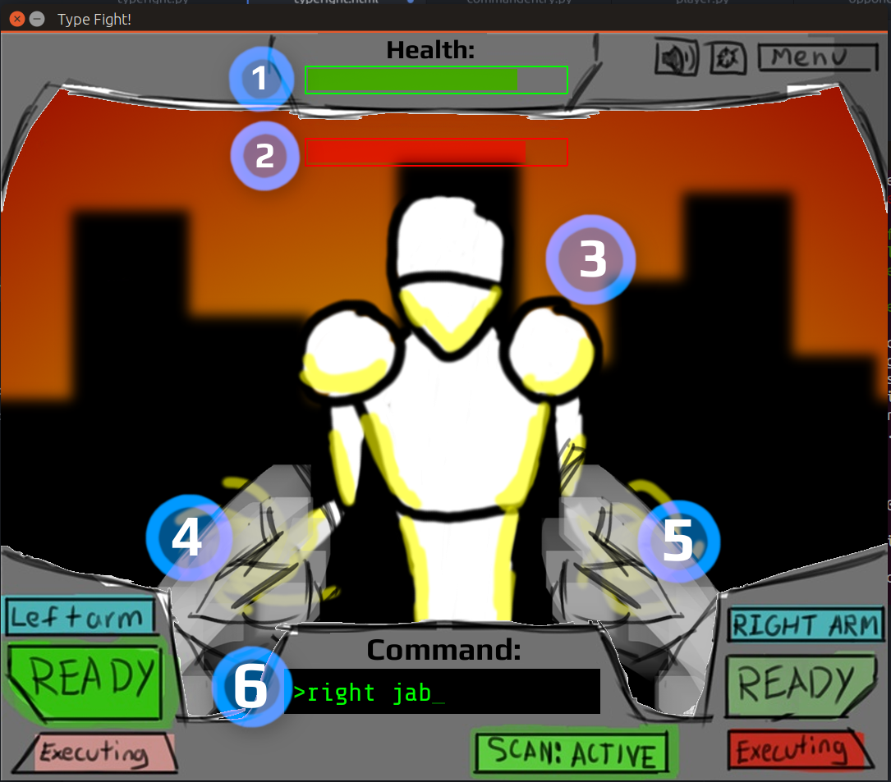

TypeFight! is a game where you fight opponents through the eyes of your own robot. What makes this game unique is its requirement that all moves be entered via a command line interface; in other words, your robot fighter does whatever you type!
Here are some tips to help you get started on your way to victory.
Please consult the below image for an overview of different parts of the game heads-up display (HUD):
Everything you can do in TypeFight! is done by entering a command using your keyboard and pressing Enter to execute. See the below table for a partial list of some commands you can enter.
| Command | Description |
|---|---|
punch |
A basic punching attack. |
jab |
Like punch, but faster to type (if slightly weaker). |
open palm strike |
A weak strike. |
haymaker |
A strong punch coming from the side. You can only aim this attack
from the left or right |
uppercut |
A strong punch coming aimed upwards. You can only aim this attack
at the center of the target. |
block |
Raises your arm(s) to block one incoming attack. |
unblock |
Lowers your arm(s) back into a fighting stance. |
Note that some commands have shorter aliases which can make them
faster to type. Here's a free one: open palm strike can also
be typed as op, which lets you use the move much faster!
Attacks and blocks also should have a direction inputted either before or after the command. The direction will generally be one of:
leftrightcenter
So to throw a left jab, you can type either left jab or
jab left. Blocking an attack coming in from the right is
achieved by entering either block right or right block
. If you leave off the direction, center is assumed.
To be an effective fighter, you must observe your opponent carefully. Your opponents will often telegraph their attacks, and they can block yours as well. Pick the right action and direction, and type it quickly to perform it in time. But be careful! Unrecognized commands, such as those with typos, won't do anything other than leave you open to attack.